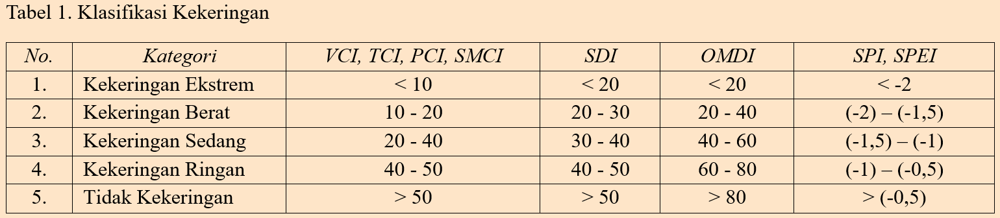
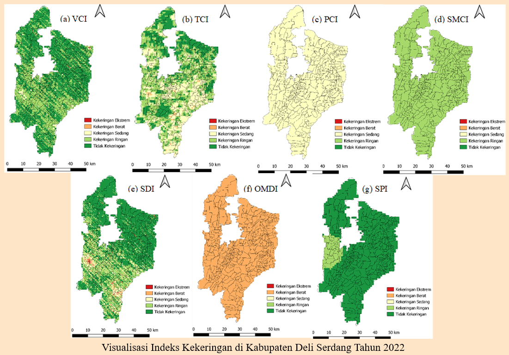
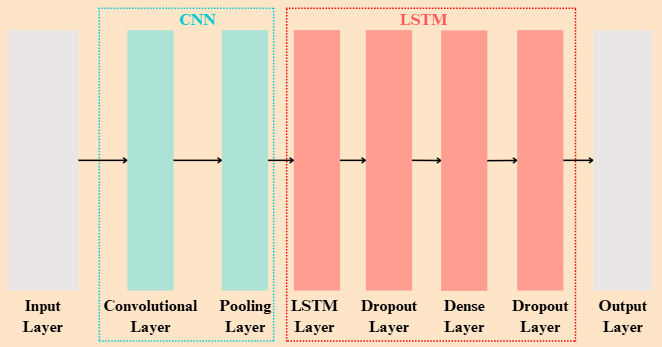
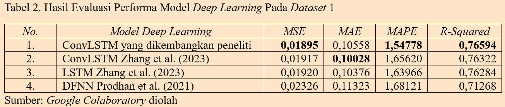
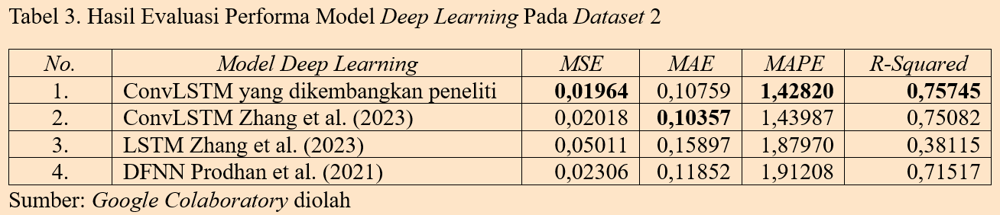
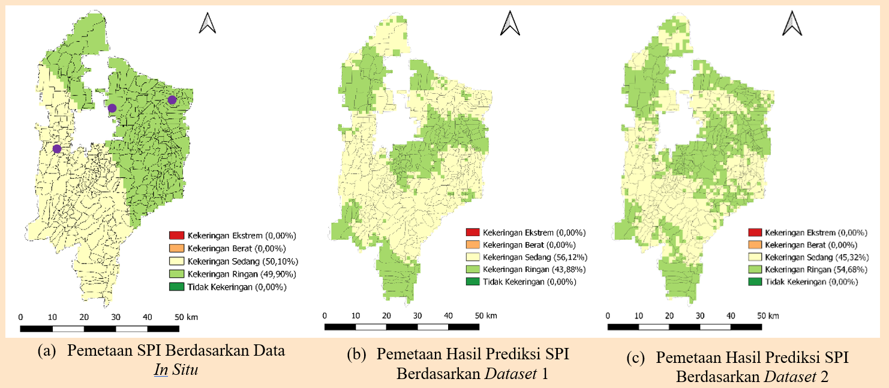

Selamat Datang di Dashboard Pemetaan Wilayah Kekeringan Kabupaten Deli
Serdang Tahun 2024
Kekeringan merupakan fenomena alam yang terjadi akibat kurangnya
curah hujan dari tingkat normal, sehingga mengakibatkan kekurangan
air untuk memenuhi kebutuhan manusia dan lingkungan. Kekeringan
terjadi secara berkala dengan durasi dan tingkat keparahan yang
bervariasi, bergantung pada wilayah dan daerah. Hal tersebut dapat
mengancam berbagai aspek kehidupan dan ekosistem alam yang berisiko
menyebabkan kemunduran dan degradasi tanah, kelangkaan air,
penggurunan, perusakan vegetasi, badai pasir, kebakaran hutan,
penurunan produktivitas tanaman pangan, dan fenomena bencana
lainnya. Oleh karena itu, dashboard ini dibangun untuk
membantu pemerintah daerah dalam memantau kekeringan di Kabupaten
Deli Serdang tahun 2024 serta melakukan upaya mitigasi yang efektif
dan tepat waktu. Visualisasi spasial berupa pemetaan wilayah
kekeringan pada dashboard ini merupakan hasil prediksi
kekeringan berbasis in situ dan
remote sensing menggunakan algoritma
deep learning yaitu
Convolutional Long Short-Term Memory.
Variabel yang digunakan dalam prediksi kekeringan terdiri dari 6
variabel independen dan 1 variabel dependen. Variabel independen yang
digunakan yaitu indeks kekeringan tunggal berbasis
remote sensing (VCI, TCI, PCI, SMCI) dan indeks kekeringan
gabungan (SDI, OMDI). Sementara itu, variabel dependen yang digunakan
merupakan indeks kekeringan tunggal berbasis in situ yaitu
SPI. Indeks kekeringan tunggal berbasis
remote sensing diperoleh melalui ekstraksi data citra
satelit dengan pendekatan piksel 500 x 500m untuk setiap desa/kelurahan,
sedangkan indeks kekeringan tunggal berbasis
in situ diperoleh melalui data in situ berupa
curah hujan yang berasal dari tiga stasiun pengamatan Badan Meteorologi,
Klimatologi, dan Geofisika (BMKG) di Kabupaten Deli Serdang. Data yang
digunakan dalam pembangunan model prediksi dikumpulkan dalam rentang
waktu 1 Janurari hingga 31 Desember 2022. Berikut penjelasan mengenai
masing-masing indeks kekeringan tersebut.
1. Vegetation Condition Index (VCI)
Vegetation Condition Index (VCI) merupakan indeks
vegetasi yang diperoleh melalui perbandingan nilai NDVI pada periode
tertentu dengan nilai NDVI maksimum dan minimum pada periode
keseluruhan. NDVI merupakan salah satu band yang
terdapat pada produk MOD13A1. VCI menormalisasi NDVI dan memisahkan
sinyal ekologis jangka panjang dari sinyal iklim jangka pendek dan
dalam pengertian ini terbukti menjadi indikator yang lebih baik
untuk memantau kondisi stres air dibandingkan dengan NDVI.
2. Temperature Condition Index (TCI)
Temperature Condition Index (TCI) merupakan indikator
tekanan termal berbasis remote sensing yang digunakan
untuk mengukur tekanan air pada vegetasi sebagai akibat dari
temperatur permukaan tanah yang meningkat. TCI dihitung berdasarkan
data citra satelit yang diperoleh dari MOD11A2. Penghitungan TCI
melibatkan nilai Land Surface Temperature (LST) yaitu
suhu permukaan tanah yang telah melalui proses
smoothing selama delapan hari, nilai LST maksimum dan
minimum dalam skala bulanan.
3. Precipitation Condition Index (PCI)
Precipitation Condition Index (PCI) merupakan indeks
kekeringan yang dinormalisasi menggunakan data CHIRPS. Indeks
tersebut dihitung untuk menjelaskan defisit curah hujan selama suatu
periode dari sinyal iklim. Nilai piksel curah hujan CHIRPS, CHIRPS
maksimum, dan CHIRPS minimum, masing-masing dihitung berdasarkan
skala bulanan. Nilai PCI yang semakin tinggi mengindikasikan
frekuensi curah hujan yang semakin tinggi pula.
4. Soil Moisture Condition Index (SMCI)
Soil Moisture Condition Index (SMCI) adalah indeks yang
digunakan untuk menunjukkan ketersediaan kelembaban tanah dengan
mempertimbangkan nilai NDVI dan
Land Surface Temperature (LST). SMCI melibatkan nilai
Soil Moisture (SM) yang berasal dari
Global Land Data Assimilation System (GLDAS). Nilai SM
yang dinormalisasi akan menghasilkan SMCI dengan nilai berkisar 0
hingga 100 sesuai dengan perubahan SM dari sangat kering atau kurang
baik menjadi sangat basah atau kondisi ideal. Nilai SM maksimum dan
SM minimum merupakan nilai maksimum dan minimum absolut yang
didasarkan pada skala bulanan.
5. Synthesized Drought Index (SDI)
Synthesized Drought Index (SDI) didefinisikan sebagai
komponen utama dari indeks vegetasi (VCI), indeks suhu (TCI), dan
indeks curah hujan (PCI). SDI merupakan indeks kekeringan gabungan
yang mengintegrasikan data remote sensingdari berbagai
sumber, seperti MODIS dan CHIRPS. Selain itu, SDI juga digunakan
sebagai indikator kekeringan pertanian untuk mengamati karakteristik
kekeringan spasial temporal pertanian. Indeks tersebut menyintesis
defisit curah hujan, tekanan termal tanah, dan kondisi pertumbuhan
vegetasi dalam proses pemantauan kekeringan. Proses pembentukan SDI
melibatkan metode analisis komponen utama atau
Principal Component Analysis (PCA). Metode tersebut
digunakan untuk mengesktrak informasi utama dari PCI, VCI, dan TCI.
Oleh karena itu, SDI dinilai sangat cocok untuk memantau kekeringan
secara komprehensif. Di samping itu,
6. Optimized Meteorological Drought Index (OMDI)
Optimized Meteorological Drought Index (OMDI) merupakan
indeks kekeringan gabungan berbasis gelombang mikro multisensor pada
remote sensing. Indeks tersebut digunakan untuk
menganalisis tren kekeringan meteorologi spasial temporal. OMDI
mengintegrasikan beberapa indeks kekeringan tunggal, seperti TCI,
PCI, dan SMCI menggunakan
Constrained Optimization Method atau metode optimasi
terbatas untuk menyempurnakan parameter variabel penginderaan jauh.
Proses ini dilakukan melalui penggabungan variabel-variabel tersebut
dengan memaksimalkan korelasi terhadap indeks
in situ yaitu SPI atau SPEI sebagai data referensi.
7. Standardized Precipitation Index (SPI)
Standardized Precipitation Index (SPI) merupakan
indikator yang merepresentasikan probabilitas terjadinya curah hujan
dalam periode waktu tertentu di suatu wilayah. Indikator ini
memiliki keunggulan berupa perhitungan yang sederhana, stabilitas
yang baik, serta kemampuannya menghilangkan perbedaan temporal dan
spasial pada data curah hujan. SPI sensitif terhadap perubahan
kekeringan dan cocok digunakan untuk pemantauan kekeringan serta
penilaian kondisi iklim pada skala waktu bulanan atau lebih.
Penghitungan SPI melibatkan curah hujan bulanan dengan distribusi
gamma yang bertujuan untuk menganalisis defisit curah
hujan pada rentang waktu yang berbeda.


Model Prediksi (Convolutional Long Short-Term Memory)
Pembangunan model ConvLSTM dilakukan dengan menggunakan dua dataset
untuk perbandingan. Dataset pertama hanya terdiri dari indeks kekeringan
tunggal berbasis remote sensing (VCI, TCI, PCI, SMCI)
sebagai variabel independen, sedangkan dataset kedua terdiri dari indeks
kekeringan tunggal berbasis remote sensing (VCI, TCI, PCI,
SMCI) dan indeks kekeringan gabungan (SDI, OMDI) sebagai variabel
independen. Masing-masing dataset terdiri dan 10.383 baris. Pembagian
data menjadi data latih, data uji, dan data validasi dalam pembangunan
model masing-masing menggunakan proporsi 80%, 10%, dan 10%. Hasilnya
adalah data latih terdiri dari 8.306 baris, data uji terdiri dari 1.038
baris, dan data validasi terdiri dari 1.039 baris. Arsitektur model
ConvLSTM yang kembangkan oleh peneliti menerapkan 8 lapisan yang terdiri
dari 1 convolutional layer, 1 pooling layer, 1
LSTM layer, 1 dense layer, dan 2
dropout layer. Pembangunan model ConvLSTM ini juga
memanfaatkan metode Bayesian Optimization untuk
hyperparameter tuning
guna mendapatkan kombinasi dari hyperparameter yang
optimal. Berikut merupakan gambar arsitektur model ConvLSTM yang
dikembangkan peneliti dalam memprediksi kekeringan di Kabupaten Deli
Serdang.

Hasil Evaluasi Model
Evaluasi model ConvLSTM yang berhasil dibangun dengan
hyperparameter optimal dilakukan dengan metrik evaluasi
berupa Mean Square Error (MSE),
Mean Absolute Error (MAE),
Mean Absolute Percentage Error (MAPE), dan Koefisien
Determinasi (R-Squared). Hasil evaluasi menunjukkan bahwa
model ConvLSTM yang dikembangkan peneliti memberikan performa terbaik
dibandingkan model deep learning lainnya pada kedua
dataset, sehingga model ini akan digunakan untuk memprediksi kekeringan
di Kabupaten Deli Serdang pada tahun 2024.


Pemetaan Hasil Prediksi Kekeringan Tahun 2024
Hasil prediksi kekeringan di Kabupaten Deli Serdang tahun 2024 dengan
model ConvLSTM terbaik berupa SPI di titik centroid pada setiap grid 500
x 500m. Nilai SPI tersebut kemudian diinterpolasi menggunakan metode
Inverse Distance Weighted (IDW) pada
software QGIS. Visualisasi spasial berupa pemetaan wilayah
kekeringan dengan lima kategori dapat dilihat pada gambar di bawah.

Berdasarkan gambar di atas, pemetaan kekeringan dari data
in situ, remote sensing, dan gabungan
menunjukkan perbedaan signifikan di beberapa wilayah. Interpolasi data
in situ dari tiga stasiun pengamatan yang berada pada
lokasi titik-titik ungu menunjukkan 50,10% wilayah mengalami kekeringan
sedang di barat laut hingga timur, sementara 49,90% mengalami kekeringan
ringan di tenggara hingga barat. Keterbatasan stasiun pengamatan
menyebabkan pola sebaran kekeringan yang lebih homogen di sekitar
stasiun. Sebaliknya, pemetaan menggunakan data
remote sensing dan gabungan menunjukkan pola kekeringan
yang lebih bervariasi, sehingga memberikan gambaran yang lebih detail
untuk prediksi tahun 2024. Pemetaan hasil prediksi dengan dataset 1
menunjukkan bahwa 56,12% wilayah mengalami kekeringan sedang dan 43,88%
lainnya mengalami kekeringan ringan. Sementara itu, pemetaan hasil
prediksi dengan dataset 2 menunjukkan bahwa 45,32% wilayah mengalami
kekeringan sedang dan 54,68% lainnya mengalami kekeringan ringan. Hasil
validasi dengan ground truth menunjukkan bahwa hasil
prediksi menggunakan dataset 2 yaitu indeks kekeringan tunggal berbasis
remote sensing dan indeks kekeringan gabungan paling sesuai
dengan kondisi aktual di lapangan dibandingkan interpolasi data
in situ dan hasil prediksi dengan data
remote sensing saja. Gabungan data in situ dan
remote sensing terbukti lebih efektif dalam menangkap
variasi spasial kekeringan secara komprehensif.